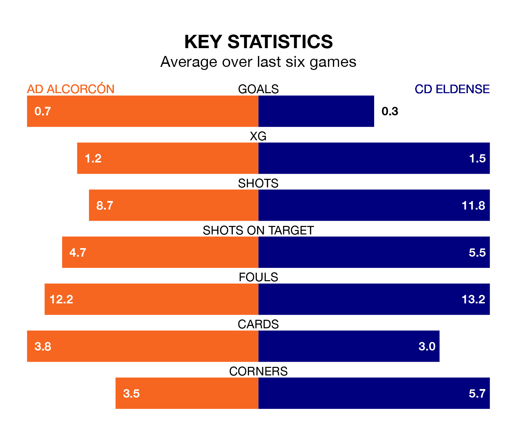

CD Eldense make the journey to the Estadio Santo Domingo to play AD Alcorcón on Sunday looking to pick up points to end their five-game losing streak.
Eldense's struggles have left them with just one point from their last six Segunda División matches, while their opponents have earned 10 from a possible 18.
Alcorcón are 18th in the table after 36 games, of which they have won 10 and drawn 10, earning 40 points.
Eldense are three places ahead of the home team in 15th, with 10 wins and 12 draws putting them on 42 points.
With 27 goals in 36 games so far this season, Alcorcón are the league's lowest scorers with 0.8 goals per game. And they are conceding more than average, letting in 46 goals at a rate of 1.3 per game.
The visitors, meanwhile, are average scorers, with 1.1 goals per game. They have conceded 1.4 goals per game.
Eldense's Marc Mateu Sanjuán is among the league's most creative players, racking up seven assists in 34 appearances so far this season, and holding third spot in the Segunda División's assist charts.
For Alcorcón, Jacobo González Rodrigañez and Emmanuel Addai have set up the most goals, having laid on three assists apiece to date.
Alcorcón's last match was on April 21, a 2-0 loss against SD Eibar.
Eldense lost 1-0 against Albacete Balompié last time out, also on April 21.
Updated: 07:59 (UTC), 26/04/24